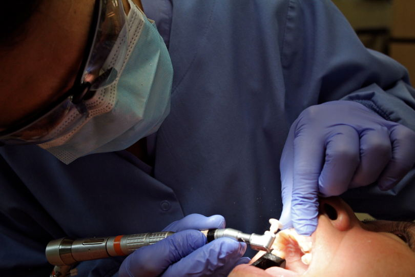
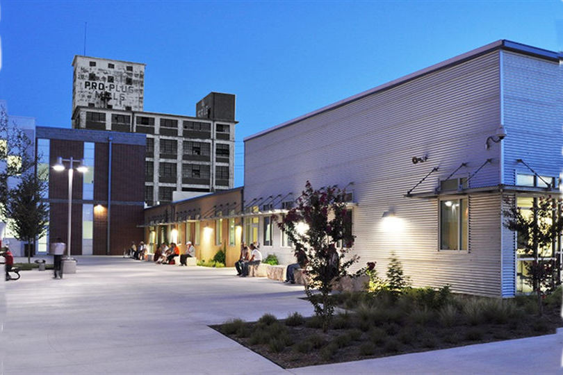

San Antonio Christian Dental Clinic

Giving Dignity, Giving Hope
SACDC provides $3 million dollars in free dental care to over 9,000 patients each year.Welcome to SACDC
Since 1986- making a difference in the dental health of those in need
